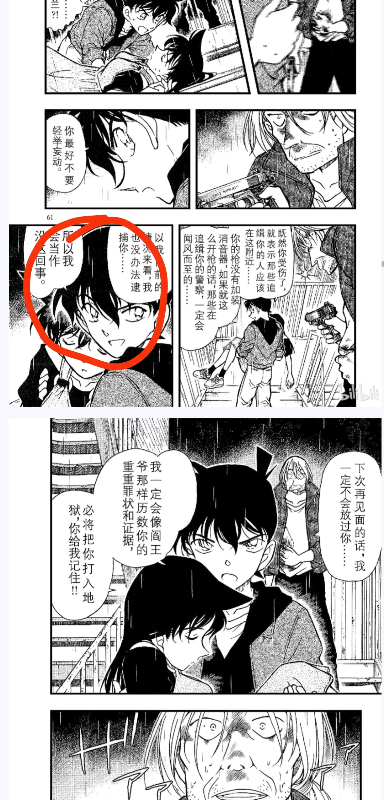
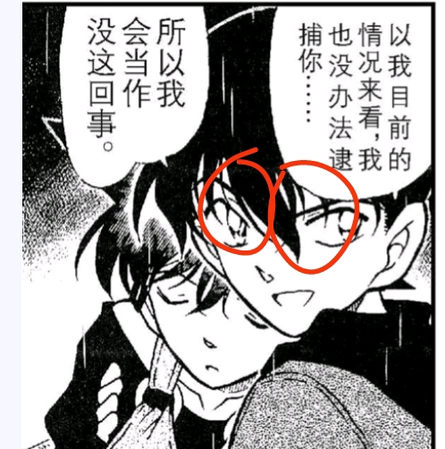
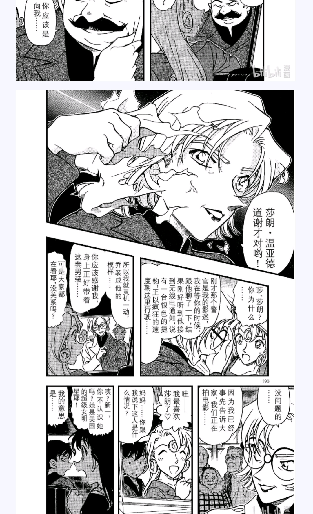
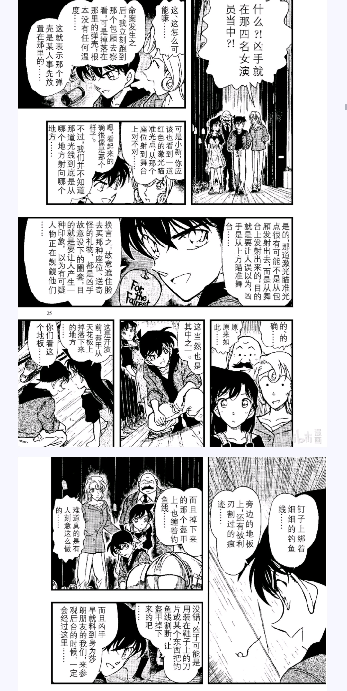
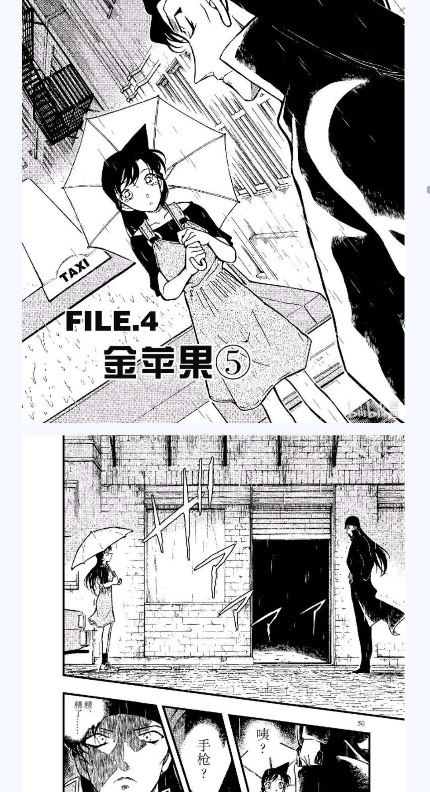
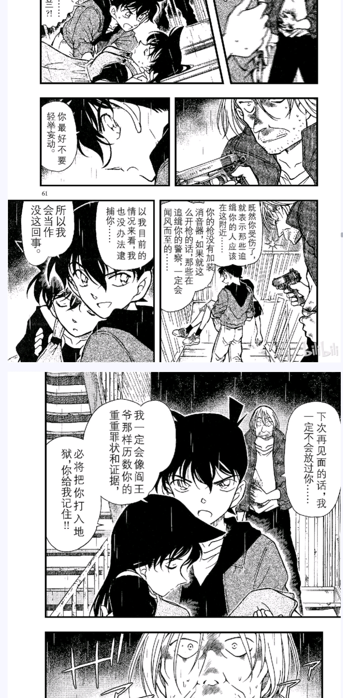
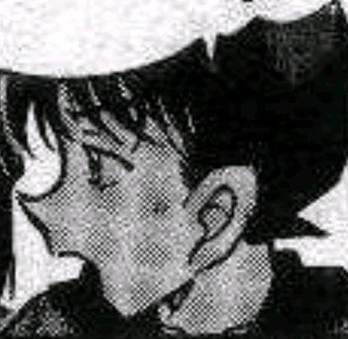
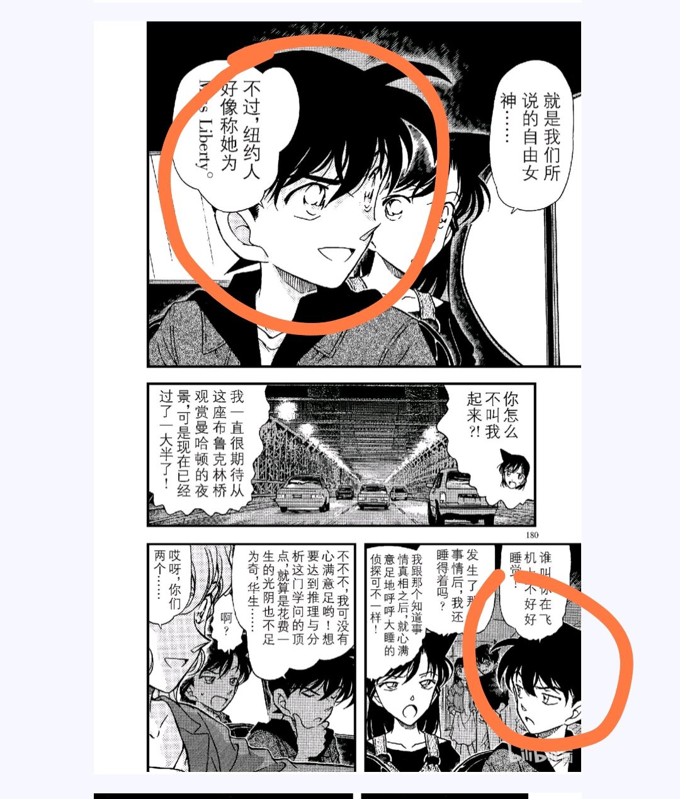
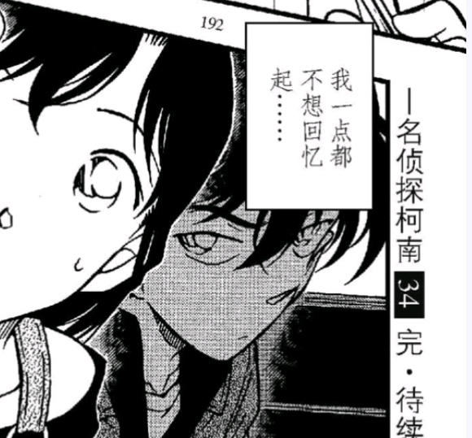
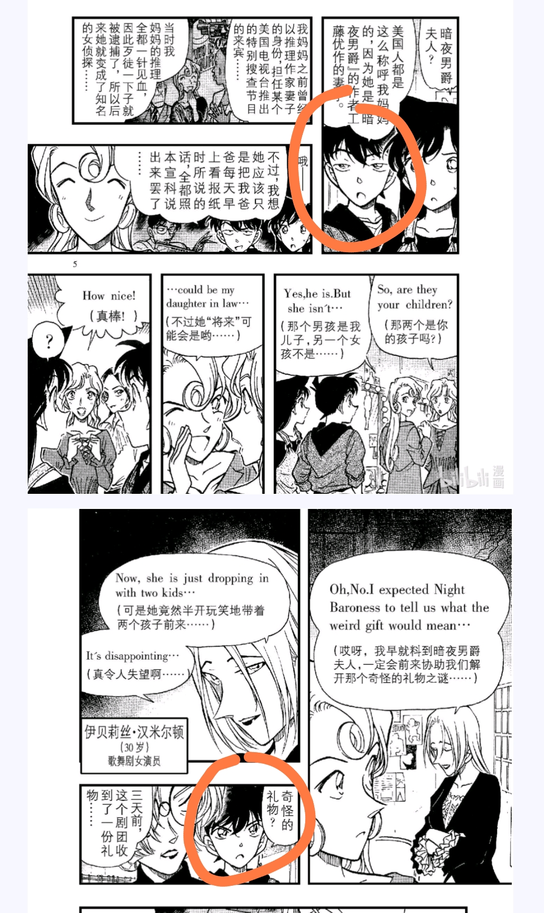

就是争议最大的，在楼梯上遇到银发srm的一段
（关于什么楼梯不对进错楼，小兰记忆出现错位之类的分析在吧里已经有大佬做过了，在这里就不多赘述了）
这里有一个小细节，柯南回头对srm说话，此时给了新一脸部一个特写，此时的本应该是单眼皮的新一却是双眼皮
而青山对单双眼皮的画法要求很严苛，会在这里出现作画错误吗？
（关于什么楼梯不对进错楼，小兰记忆出现错位之类的分析在吧里已经有大佬做过了，在这里就不多赘述了）
这里有一个小细节，柯南回头对srm说话，此时给了新一脸部一个特写，此时的本应该是单眼皮的新一却是双眼皮
而青山对单双眼皮的画法要求很严苛，会在这里出现作画错误吗？


这个有人提出来过
我们可以看之前的一些画面
莎郎和秀一的设定里都是双眼皮，而青山在每一个展示莎郎和秀一面部的画面上都画有双眼皮，而新一则一直是单眼皮
漫画家不会平白无故地画某一个细节，除非它有深意
莎郎和秀一的设定里都是双眼皮，而青山在每一个展示莎郎和秀一面部的画面上都画有双眼皮，而新一则一直是单眼皮
漫画家不会平白无故地画某一个细节，除非它有深意



我刚刚还看到B站的视频下面评论区，他们说“青山认证，整个纽约篇就是为了让新一说一句话：救人不需要理由。”，贝新论不成立，我都搞糊涂了，到底谁是对的
2024-03-10 09:07 | nusuaihxi:贝新论成立，这句话一样可以是新一说的，记忆都混乱了，剪辑一下不就行了2024-03-10 09:08 | 碎雪月夜:我的理解是，新一应该也说过这句话，但不是在这个画面说的，因为小兰昏迷后有大段的留白，能做的文章太多了2024-03-10 09:10 | 贴吧用户_QZV6M6P:回复 nusuaihxi :哦2024-03-10 09:10 | 贴吧用户_QZV6M6P:回复 碎雪月夜 :谢谢，明白了2024-03-10 09:52 | 櫻井青城:你要知道文字是可以展示“”——引号的，但语言不能，谁能确定这里的“新一”是不是需要加上引号呢？2024-03-10 09:53 | 贴吧用户_QZV6M6P:回复 櫻井青城 :我明白了2024-03-10 10:09 | 即将02的废物月:这样讲，颇有一种：新一说不出这种话，但是我要让新一说出这种话所以用了这种方法。的感觉2024-03-10 10:10 | 即将02的废物月:类似于：新一不会哭，但是我要让新一哭，所以死罗神出现了假新一。新一和兰不能见面，但是我要让新一和兰见面所以用快斗假扮新一。这种2024-03-10 10:11 | 贴吧用户_QZV6M6P:回复 即将02的废物月 :懂了，谢谢2024-03-10 10:26 | 贴吧用户_aZQb9A8:刚子还认为绀青之拳和天空树篇画的新兰互动呢2024-03-10 10:29 | 贴吧用户_QZV6M6P:回复 贴吧用户_aZQb9A8 :有道理2024-03-10 10:33 | 贴吧用户_aZQb9A8:回复 贴吧用户_QZV6M6P :所以这个让新一说出某句话我不明白怎么就可以被认作可以反驳贝新论的证据了2024-03-10 10:35 | 贴吧用户_QZV6M6P:回复 贴吧用户_aZQb9A8 :我也觉得有怀疑，但看人家说的挺真的，所以想不明白了2024-03-10 10:42 | 贴吧用户_aZQb9A8:回复 贴吧用户_QZV6M6P :顶着新一脸扮新一，暂时精神新一可能在刚子看来就算新一了，工藤新一是个别人也可以上的账号。原号主暂时上不了号，好兄弟平次，快斗（也可能是有血缘关系的亲兄弟）上过号帮忙2024-03-10 10:46 | 贴吧用户_QZV6M6P:回复 贴吧用户_aZQb9A8 :哈哈哈，主打一个大乱炖2024-03-10 20:25 | 贴吧用户_GMSD67V:回复 贴吧用户_QZV6M6P :新一就像小说男主一样，柯南是作者+声优的结合体。因为作品性质的问题，工藤新一出来就是工作性质的。柯南更像反应作家生活的。2024-03-10 21:14 | Deylen🔯:合理，纽约篇的画面可能真实存在，但顺序是完全混乱的，无法确定先后2024-03-10 23:27 | 贴吧用户_QZV6M6P:回复 Deylen🔯 :原来如此啊，谢谢2024-03-10 23:27 | 贴吧用户_QZV6M6P:回复 贴吧用户_GMSD67V :明白了2024-03-11 00:00 | 贴吧用户_GMSD67V:回复 贴吧用户_QZV6M6P :之前我在别的帖说过，纽约篇是飞天密室后面的案子，实际连载是中华街案后面的。另外青山没有给标准答案，我们很难片段现在出现的纽约篇是归属于梦境还是回忆。按中华街的回忆主体毛利兰的状态看，更偏向梦境，如果是梦的话，事件是有的，就是不知道几分真了。2024-03-11 00:42 | 贴吧用户_QZV6M6P:回复 贴吧用户_GMSD67V :哦2024-03-31 23:07 | 雪者风形:毕竟说出“真相只有一个”“逃避什么都解决不了”这种话是不需要一个如此复杂的大篇章的2024-04-01 05:29 | 贴吧用户_QZV6M6P:回复 雪者风形 :哈哈哈哈2024-04-11 22:32 | 蜡笔大可爱wwww:刚子经常这样2024-04-12 00:04 | 贴吧用户_QZV6M6P:回复 蜡笔大可爱wwww :哈哈，是这样啊


当然，这些也有大佬分析过，不过我是有一个大胆的想法
青山很擅长利用漫画的特性来构筑读者的认知错觉，在樱花篇里用黑白画面混淆樱花和雪花就是一个很好的例子
青山很擅长利用漫画的特性来构筑读者的认知错觉，在樱花篇里用黑白画面混淆樱花和雪花就是一个很好的例子
这里，小兰晕倒，srm举枪，这时新一撇过头来说了一句话
（这里应该是过度解读，srm表示震惊的气泡出现在了新一解释消音管和枪声的话语的右上方，而漫画里是从上到下从右到左的读取顺序，是不是暗示srm震惊的点不是新一的话，而是新一的声音）
如果，新一真的是贝姐假扮的，有没有可能这里假新一是恢复了贝姐的声线跟srm讲话，才让srm震惊到呆滞
（看srm的眼神我真的很难读出什么感动之类的只是单纯的震惊）
毕竟，漫画是没有声音的
（这里应该是过度解读，srm表示震惊的气泡出现在了新一解释消音管和枪声的话语的右上方，而漫画里是从上到下从右到左的读取顺序，是不是暗示srm震惊的点不是新一的话，而是新一的声音）
如果，新一真的是贝姐假扮的，有没有可能这里假新一是恢复了贝姐的声线跟srm讲话，才让srm震惊到呆滞
（看srm的眼神我真的很难读出什么感动之类的只是单纯的震惊）
毕竟，漫画是没有声音的

2024-04-06 06:54 | 贴吧用户_abNE55a:新概念这么说还真有可能

所以这个双眼皮的特写，是不是映射说这里假新一是暴露了部分贝姐的特性（指声音），而画面是无法显示声音的，所以用这个仅露了一瞬间的双眼皮特写来表示
2024-03-31 18:13 | mangomengke07:2024-04-20 00:17 | 贴吧用户_7PX2yAy:！

这里新一双眼皮那一格里的台词有极强的违和感“以我目前的情况来看，我也没办法逮捕你，所以我会当作没这回事”
这里的违和感太浓了，我是不会觉得新一会说出放过坏人这种话
有没有可能，这句话是以贝姐的身份而不是新一的身份说的，“当作没这回事”不是放过坏人而是偷袭秀一的计划取消
这里后面的一格，新一的双眼皮消失了，他的话又变回了正义感十足的语气，这句话恐怕就是那个模仿者贝姐又掩藏进了伪装里，说这句话的是被扮演的新一
这里的违和感太浓了，我是不会觉得新一会说出放过坏人这种话
有没有可能，这句话是以贝姐的身份而不是新一的身份说的，“当作没这回事”不是放过坏人而是偷袭秀一的计划取消
这里后面的一格，新一的双眼皮消失了，他的话又变回了正义感十足的语气，这句话恐怕就是那个模仿者贝姐又掩藏进了伪装里，说这句话的是被扮演的新一
他绝对不会作画错误，全都是故意的。我到现在都记得第一次看列车篇时好奇为什么志保的裤裆鼓鼓的，当时心里还嘀咕了一句“这是画男角色画多了画顺手了？”。结果下一页他就告诉我那人是基德 （不要问我为什么看裤裆，就是莫名其妙被吸引了注意力嘛
（不要问我为什么看裤裆，就是莫名其妙被吸引了注意力嘛
（不要问我为什么看裤裆，就是莫名其妙被吸引了注意力嘛2024-03-10 09:58 | 碎雪月夜:我去，盯裆猫！2024-03-10 10:03 | 辛零晨非:哈哈哈哈哈哈哈哈哈哈哈2024-03-10 10:28 | 贴吧用户_aZQb9A8:绷不住了2024-03-10 13:48 | 星辰free🌸:大晚上的给我看笑了2024-03-10 20:31 | 贴吧用户_GMSD67V:回复 碎雪月夜 :就像M26做噩梦那段，青山本人是允许出现梦出现在正篇里，掩护真正的内容的，当然了，M26的哀做的梦对应的正确答案我们都知道了，自然能对比出那里是真的，哪里是假的。但是纽约篇没有给你标准答案去比对。2024-03-10 22:03 | 林夕劫掠队长💕:可是每次志保变大裤裆都是鼓得呀2024-03-23 08:13 | 秀美的玛乔丽:回复 碎雪月夜 :哈哈哈哈哈哈本来就想笑这下给你整的喷出来了哈哈哈哈哈哈哈哈2024-03-24 08:53 | 小猫澈:哈哈哈哈哈哈哈哈2024-03-31 18:15 | mangomengke07:回复 碎雪月夜 :哈哈哈哈哈哈哈哈哈2024-03-31 19:36 | DEATHRUG1:无力吐槽2024-04-06 06:55 | 贴吧用户_abNE55a:2024-04-20 00:35 | 贴吧用户_09635NV:回复 碎雪月夜 :哈哈哈哈哈哈哈哈嗝


但是新一和有希子对话的时候，也有双眼皮刻画

2024-03-10 12:01 | 贴吧用户_Q7e6y1Q:可能是眼窝？2024-04-12 00:18 | 蜡笔大可爱wwww:这个太糊了
紐約篇能引起這麼多人討論就代表這篇絕對有問題，最奇怪的是那一句救人不需要理由，這句話現在想來很是詭異
不过这个新一看起来真的很秀气呀
“救人不需要理由”这句话对谁有意义？
只对兰，而且必须是新一说的。
因为我们其他人会自己思考不同情况下的选择和理由。
兰在做了那么多看似帮忙实则害人的事情之后毫不反省，毫无长进，所以必须要设定一个“神谕”使之合理化。
这句话不是作者想要表达的，也不是读者需要接收的，仅仅只是兰这个角色需要听见的，所以只要在兰的认知里，是由新一对她说的就足够成立。
至于那是不是新一的本意，甚至说话人是不是新一，都与兰无关。兰本来就生活在一个巨大的假象中，再多一条假象也没什么区别。
作者必须设法交待这句话，只说明他不会计划描写兰的成长进步了，因为他已经给兰的不成长不进步安排好了一个如此强大的理由。
兰在这重假象的封闭下，以后只会做出更多更大看似行善实则造孽的行为。
只对兰，而且必须是新一说的。
因为我们其他人会自己思考不同情况下的选择和理由。
兰在做了那么多看似帮忙实则害人的事情之后毫不反省，毫无长进，所以必须要设定一个“神谕”使之合理化。
这句话不是作者想要表达的，也不是读者需要接收的，仅仅只是兰这个角色需要听见的，所以只要在兰的认知里，是由新一对她说的就足够成立。
至于那是不是新一的本意，甚至说话人是不是新一，都与兰无关。兰本来就生活在一个巨大的假象中，再多一条假象也没什么区别。
作者必须设法交待这句话，只说明他不会计划描写兰的成长进步了，因为他已经给兰的不成长不进步安排好了一个如此强大的理由。
兰在这重假象的封闭下，以后只会做出更多更大看似行善实则造孽的行为。
2024-03-22 07:28 | 辣舞西弟:这种骚话一出口，毛利兰再一晕，直接将人物长期定性了。这个角色要么付出代价成长，要么几乎不带有深度的剧情，维持现状到结局2024-03-31 19:37 | DEATHRUG1:同意
我又看了一些漫画细节，新一确实也有双眼皮的画面，但是在睁大眼睛（指眉毛眼睛都快挤到一起的时候）从来没有画过双眼皮，一般是眼睛半眯（眉毛和眼睛间距很大的时候）有时会有双眼皮的描绘，这里新一眼睛睁挺大却画上了双眼皮，很怪
反倒是赤井和莎郎，不管摆出怎样的表情，双眼皮的那条线都很明显
反倒是赤井和莎郎，不管摆出怎样的表情，双眼皮的那条线都很明显



2024-04-20 23:19 | 贴吧用户_QWP7RR3:回忆中的双眼皮


眼睛的画法不是可以参考危命那里小哀扮柯南么。不记得在哪个帖子看到过了，但是73对动画组说过男女眼睛画法的差异，区别就是女性眼睛上眼皮那里总有一条眼线，而男性是没有的。要说双眼皮的话，全剧最明显的指定男性双眼皮拥有者应该是诸伏兄弟那样的，吧。
从画画的角度来说，一般眼睛的画法有很多种，但是双眼皮分为内双和外双，在名柯作品里面：外双的画法就是诸伏兄弟那样的，整只眼睛上方有线（但线一般不连贯，连贯后会像鱼眼），内双则是在眼尾处的一小部分画一个类似头发分叉的样子，灰原就是内双（其实一般女性角色都是这样画法），像诸伏兄弟眼尾呈现一种向上的三角形的画法，是类似丹凤眼，更多体现的是阴柔俊美的状态（非阳刚的那种俊），男性比较少这样画（男的一般都画成单眼皮）。
10楼和14楼的不是双眼皮，是画画里面表达人物无语/不爽/郁闷/疲惫/漫不经心的一种半月眼表达方式，随便上网搜一下半月眼图片应该会出来很多素材。
至于1楼红圈那张新一的眼睛部分有及其细微的线，我只能说我个人看不像双眼皮，可能是眼皮的点缀画法，当然如果有人坚持觉得是双眼皮也可以，只不过新一抱着小兰那张，新一是没有双眼皮的，我们反观哀化妆成柯南那集来进行对比，全程“柯南”眼尾内双画法是比较明显的，根据一致性原则，73不太可能画得这么不严谨，毕竟，他真的很细，细节的细
10楼和14楼的不是双眼皮，是画画里面表达人物无语/不爽/郁闷/疲惫/漫不经心的一种半月眼表达方式，随便上网搜一下半月眼图片应该会出来很多素材。
至于1楼红圈那张新一的眼睛部分有及其细微的线，我只能说我个人看不像双眼皮，可能是眼皮的点缀画法，当然如果有人坚持觉得是双眼皮也可以，只不过新一抱着小兰那张，新一是没有双眼皮的，我们反观哀化妆成柯南那集来进行对比，全程“柯南”眼尾内双画法是比较明显的，根据一致性原则，73不太可能画得这么不严谨，毕竟，他真的很细，细节的细
这个不是画的双眼皮，个人认为14楼发的这个是半眯时眼皮的阴影。而且青山作为一个漫画家，每一话都是有仔细考量的，这个画法肯定是别有深意。所以我认为楼主的证据是正确的
而且，通篇看下来，貌似只有毛利回忆中的新一与其它新一不同，毛利回忆中的新一的眼神柔和，表情不同于任何一个新一。所以个人认为应该是青山故意埋的坑。
可贝姐把新一小兰当天使不就是因为他俩救过她嘛，如果这个砂仁魔不是贝姐而新一是，就和前者相悖了
2024-04-15 15:31 | 暗蓝heart:贝姐把新一小兰当天使不一定因为他俩救过她。纽约末尾指出了最改变贝姐的地方。贝姐：“帮我转述小兰，她说得对，‘天使就在我的身边’。”但整个纽约，小兰的回忆里，她从来说过这句话，在加上回忆中其他诡异的部分推断纽约的故事没讲完2024-04-15 15:34 | 梦梦-2017:回复 暗蓝heart :也有可能是埋了伏笔？就算砂仁魔不是贝姐吧，但是新一那个角度也不像双眼皮2024-04-15 15:43 | 暗蓝heart:回复 梦梦-2017 :这就不知道了。死罗神里的假新一是多个格子双眼皮，贝新论只是能解释大多数诡异部分的一个猜想